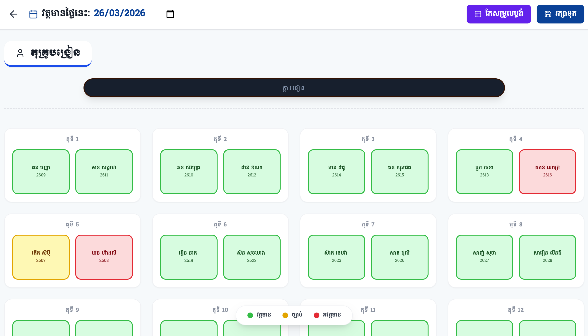
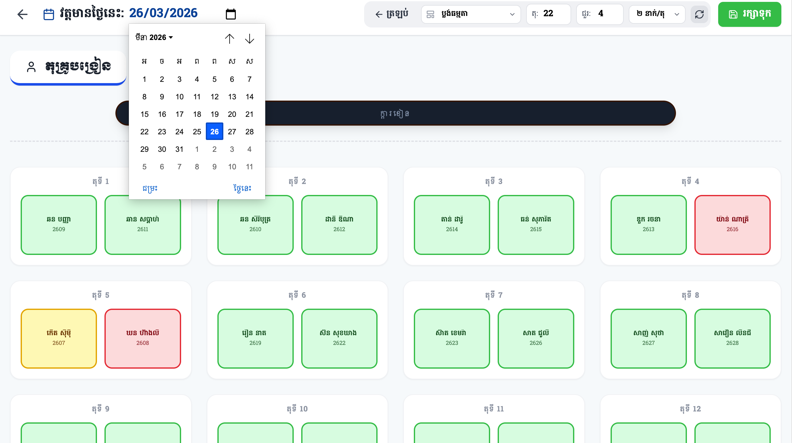
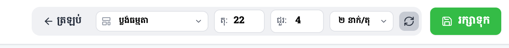

សៀវភៅណែនាំពីរបៀបរៀបចំប្លង់តុ និងការចុះវត្តមានសិស្សតាមទីតាំងជាក់ស្តែង
មុខងារចុះវត្តមានតាមប្លង់តុ (Table Layout Attendance)
ការចុះវត្តមានគឺមានភាពងាយស្រួលបំផុត លោកគ្រូអ្នកគ្រូគ្រាន់តែចុចផ្ទាល់ទៅលើប្រអប់ឈ្មោះសិស្ស។ ប្រព័ន្ធប្រើប្រាស់ពណ៌ចំនួន៣ ដើម្បីសម្គាល់ស្ថានភាពវត្តមាន៖

លោកអ្នកអាចត្រឡប់ទៅមើលទិន្នន័យវត្តមានចាស់ៗ ឬកត់ត្រាវត្តមានសម្រាប់ថ្ងៃណាមួយបានដោយសេរី តាមរយៈការប្តូរកាលបរិច្ឆេទនៅផ្នែកខាងលើ៖

រាល់ពេលដែលលោកអ្នកធ្វើការផ្លាស់ប្តូរថ្ងៃខែ ពណ៌នៃវត្តមាននៅលើប្លង់តុនីមួយៗនឹងផ្លាស់ប្តូរភ្លាមៗទៅតាមទិន្នន័យដែលបានរក្សាទុកក្នុងថ្ងៃនោះ។ *ចំណាំ៖ ប្រព័ន្ធអាចមិនអនុញ្ញាតឱ្យចុះវត្តមាននៅថ្ងៃអាទិត្យ ឬថ្ងៃឈប់សម្រាកដែលបានចាក់សោ។
ដើម្បីប្តូរទម្រង់អង្គុយរបស់សិស្សឱ្យដូចនឹងថ្នាក់រៀនជាក់ស្តែង លោកអ្នកត្រូវចុចប៊ូតុង កែសម្រួលប្លង់ នៅជ្រុងខាងស្តាំខាងលើ នោះផ្ទាំងឧបករណ៍នឹងលេចឡើង៖

មាន៣ជម្រើសធំៗ៖ ប្លង់ធម្មតា(Grid), ប្លង់រាងអក្សរយូ(U-Shape), និងប្លង់អង្គុយជាក្រុមជារង្វង់។
លោកអ្នកអាចកំណត់ចំនួនតុសរុប (ឧ. ២០តុ) និងចំនួនជួរឈរ (ឧ. ៤ជួរ) ទៅតាមទំហំថ្នាក់ជាក់ស្តែង។
អាចកំណត់ចំនួនកៅអីក្នុងមួយតុបាន ឧទាហរណ៍៖ អង្គុយម្នាក់ឯង, អង្គុយ២នាក់, ឬអង្គុយ៥នាក់ក្នុងមួយក្រុម។
នៅពេលលោកអ្នកកំពុងស្ថិតក្នុង មុខងារកែសម្រួលប្លង់ (Edit Mode) លោកអ្នកអាចចាត់សិស្សចូលតុបានយ៉ាងងាយ៖
ចុចលើប្រអប់កៅអីទំនេរដែលមានសញ្ញា (+) នោះផ្ទាំងបញ្ជីឈ្មោះសិស្សនឹងលោតឡើងឱ្យលោកអ្នកជ្រើសរើស។
យកម៉ៅទៅដាក់លើឈ្មោះសិស្សណាមួយ នោះនឹងមានសញ្ញាខ្វែង (x) ពណ៌ក្រហមលេចឡើងសម្រាប់ដកសិស្សនោះចេញវិញ។
កុំភ្លេចរក្សាទុក! បន្ទាប់ពីរៀបចំប្លង់ និងចាត់សិស្សចូលតុរួចរាល់ សូមចុចប៊ូតុង រក្សាទុក ពណ៌ខៀវ ដើម្បីបញ្ចប់ការកែសម្រួល។
ដើម្បីស្វែងយល់កាន់តែច្បាស់ និងការអនុវត្តជាក់ស្តែងពីរបៀបប្រើប្រាស់មុខងារចុះវត្តមានតាមប្លង់តុនេះ សូមទស្សនាវីដេអូណែនាំខាងក្រោម៖